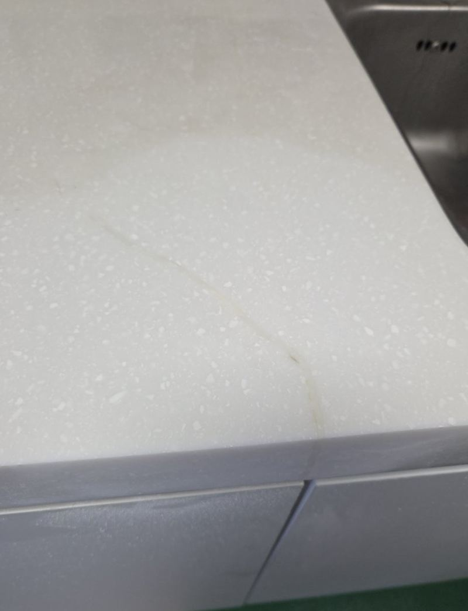
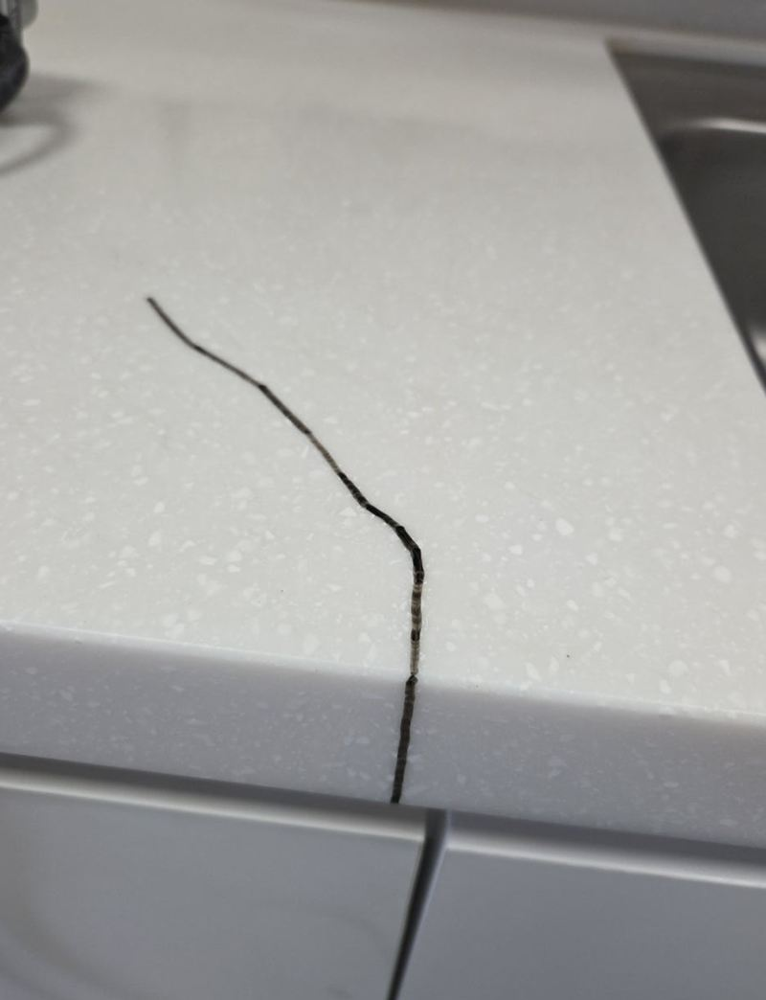
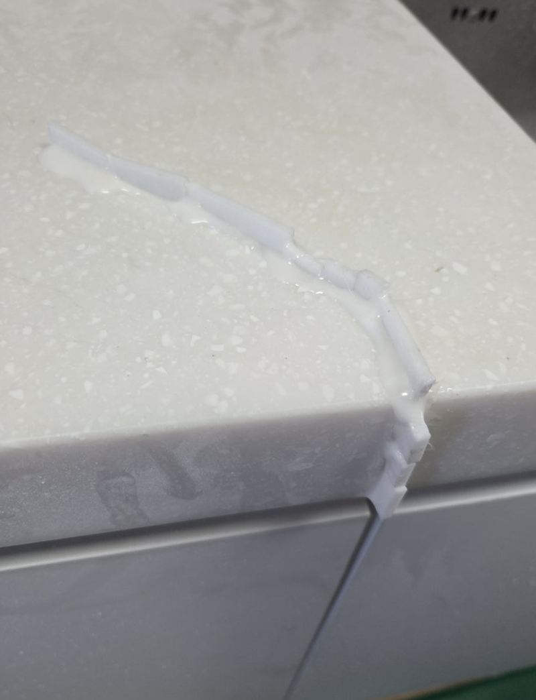
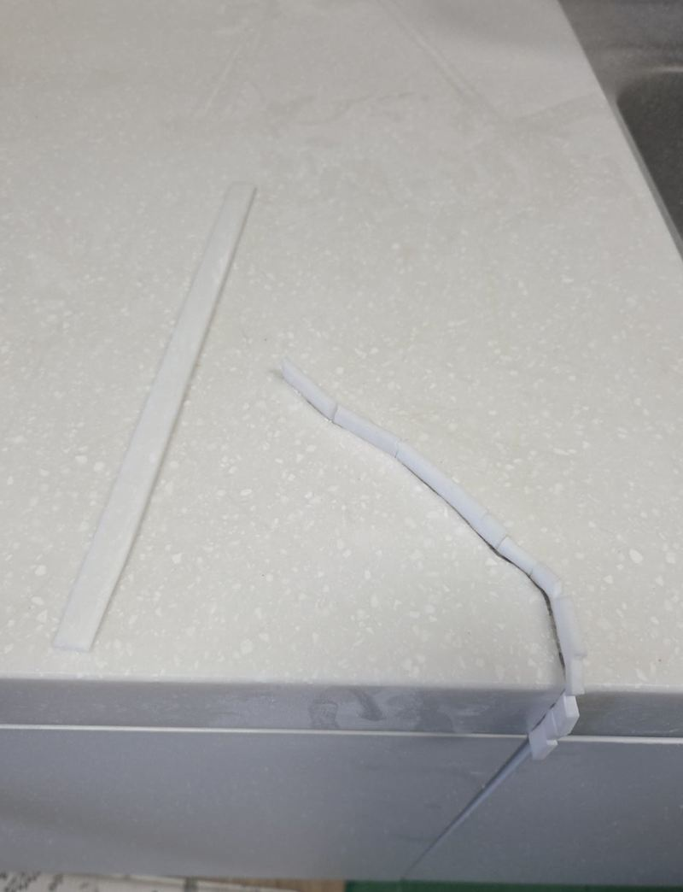
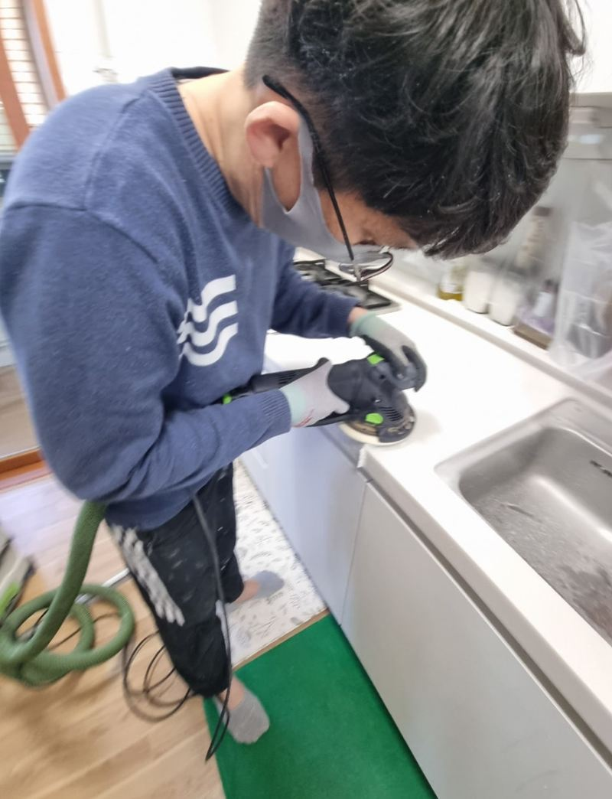
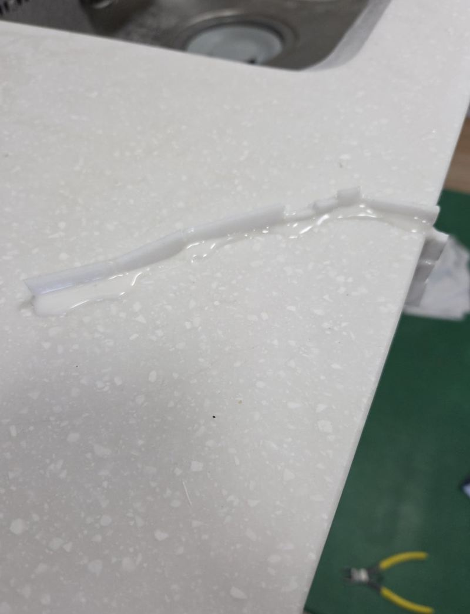

하남 부엌 대리석 상판 균열 연마·폴리싱 과정
← 밀어서 전후 비교 →
처음엔 상판 이음부에 머리카락 같은 금 하나였는데, 몇 달 사이 길어지고 옆으로 가지까지 쳤다는 집이에요. 고객님은 "색 차이가 크게 나지 않게, 자연스럽게"를 부탁하셨어요. 갈라진 부분을 정리해 같은 대리석 조각으로 메우고, 표면을 갈고 광을 내서 마무리했어요.
| 현장 | 하남 덕풍동 아파트 주방 |
|---|---|
| 증상 | 상판 이음부에서 시작된 균열이 길어지고 실금이 이어짐 |
| 한 일 | 균열 범위 진단 → 트리머로 홈 정리 → 대리석 조각 재단·본딩 → 단계 연마 → 폴리싱 |
| 요청 | 색 차이 최소화 |
금을 그대로 두면
상판 금은 처음엔 보기만 거슬리지만, 그 틈으로 물이 스며들면 아래 합판이 젖고 금이 더 빨리 벌어져요. 단차가 생기면 행주질할 때 걸리고, 모서리 쪽이면 떨어져 나가기도 해요. 길어지기 시작했다면 일찍 손보는 게 범위도 작아요.


홈을 내고, 메우고, 붙이기
균열 범위 진단
보이는 금뿐 아니라 안쪽으로 이어진 실금까지 확인해 어디까지 손볼지 정했어요.
트리머로 홈 정리
들쭉날쭉 갈라진 부분을 그대로 두면 메워도 잘 안 붙어요. 트리머로 일정한 모양의 홈을 내서 메울 자리를 만들었어요.


대리석 조각 본딩
홈 크기에 맞춰 자른 대리석 조각을 끼우고 본드로 단단히 붙였어요.

연마와 폴리싱으로 표면 맞추기
굳은 뒤 거친 숫돌부터 고운 숫돌까지 단계적으로 갈아 주변 높이와 맞췄어요. 마지막 폴리싱으로 광을 내 주변 상판과 반사감이 비슷해지게 했어요. 무늬가 있는 대리석이라 가까이 보면 이은 흔적이 보일 수 있지만, 멀리서 보면 거의 티가 나지 않게 맞췄어요.

상판 균열, 이런 경우 연락 주세요
- 이음부를 따라 금이 길어져요상판끼리 맞댄 자리는 힘이 몰려 금이 잘 가요.
- 쿡탑·싱크볼 모서리에서 금이 시작됐어요구멍 모서리는 열과 무게가 몰리는 곳이에요.
- 금 사이로 물이 스며 색이 변했어요아래 합판이 젖고 있을 수 있어요.
- 손톱에 걸리는 단차가 생겼어요금 양쪽 높이가 달라졌다는 뜻이에요.
상판 오래 쓰는 습관
- 뜨거운 냄비는 받침 위에급한 온도 차이는 대리석에 금을 만들어요.
- 이음부에 무거운 것 두지 않기전기밥솥·정수기 같은 무게가 이음부에 계속 실리면 금이 잘 가요.
- 물기는 바로 닦기작은 틈으로 스며든 물이 아래 합판을 상하게 해요.
대리석 상판 균열 질문
보수하면 다시 갈라지지 않나요?
본딩과 연마로 단단히 붙이지만, 같은 자리에 큰 충격이나 무게가 반복되면 다시 금이 갈 수 있어요.
인조대리석도 같은 방식인가요?
비슷한 순서로 해요. 재질에 맞는 보수재와 연마 단계를 골라요.
작업 중 먼지가 많이 나나요?
연마할 때 고운 먼지가 생겨요. 주변을 덮고 작업한 뒤 정리해요.
상판 전체를 갈아야 하는 경우는요?
금이 여러 곳에 깊게 퍼졌거나 상판이 들떠 있다면 교체가 나을 수 있어요.
얼룩도 같이 지워지나요?
표면 얼룩은 연마로 옅어지는 경우가 많아요. 깊이 스며든 얼룩은 남을 수 있어요.
보수 후 언제부터 쓸 수 있나요?
본드가 굳은 뒤 연마까지 마치면 대부분 바로 쓰셔도 돼요. 작업 끝날 때 안내해요.
금이 하나뿐인데 지금 고쳐야 하나요?
길어지지 않으면 지켜봐도 돼요. 다만 이음부나 구멍 모서리 금은 커지기 쉬워 일찍 보는 게 좋아요.
보수 부위 색은 미리 볼 수 있나요?
비슷한 색 재료를 대 보고 고르지만, 연마 후 색이 조금 달라 보일 수 있어 미리 말씀드려요.
다른 상판 복원 현장
- 천안 균열 생긴 대리석 상판 부분 보수 방법 · 블로그
- 청주 과일세척기 제거 후 싱크대 복원 가능할까 · 블로그
- 김포 싱크대 흠집 복원 방법과 작업 과정 · 블로그
- 하남 싱크대 대리석 연결부 실금 수리 방법 · 블로그
- 하남 어린이집 싱크대 대리석 깨짐 수리 · 블로그
- 종로 싱크대장 리폼, 대리석 절단 작업 과정 · 블로그
- 수원 싱크대 대리석 깨짐 수리 방법과 비용 · 블로그
- 의정부 싱크대 대리석 상판 구멍 복원 방법 · 블로그
금 간 곳을 가까이, 상판 전체를 멀리서 찍어 보내 주세요.
전화 상담 010-4517-9872